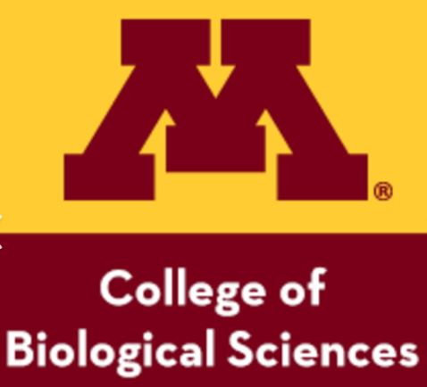
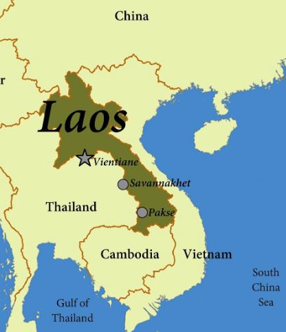

Pursuing a Degree in Biology at the University of Minnesota

Sophia aspires to attend the University of Minnesota - Twin Cities to pursue her academic goals. The University of Minnesota, founded in 1851, is a renowned public research university located in Minneapolis and St. Paul, Minnesota. With a rich history spanning over a century and a half, the University of Minnesota has evolved into one of the nation's top public research universities, offering a diverse range of undergraduate and graduate programs.
At the University of Minnesota, Sophia aims to major in Biology with a minor in Marine Biology. She is passionate about environmental conservation, particularly in marine ecosystems, and hopes to contribute her skills and knowledge to this noble cause. Through her academic journey, Sophia seeks to gain a deeper understanding of marine life and its conservation, preparing herself for a career dedicated to protecting the planet's biodiversity.
Visit Laos
Laos, officially known as the Lao People's Democratic Republic, is a landlocked country in Southeast Asia, bordered by Myanmar, China, Vietnam, Cambodia, and Thailand. It is known for its mountainous terrain, Buddhist monasteries, and rich cultural heritage. One of Sophia's goals is to visit Laos, her family's country of origin, to reconnect with her roots, experience the culture firsthand, and explore the rich natural landscapes. She is eager to immerse herself in the traditions, cuisine, and customs of Laos, gaining a deeper appreciation for her heritage.